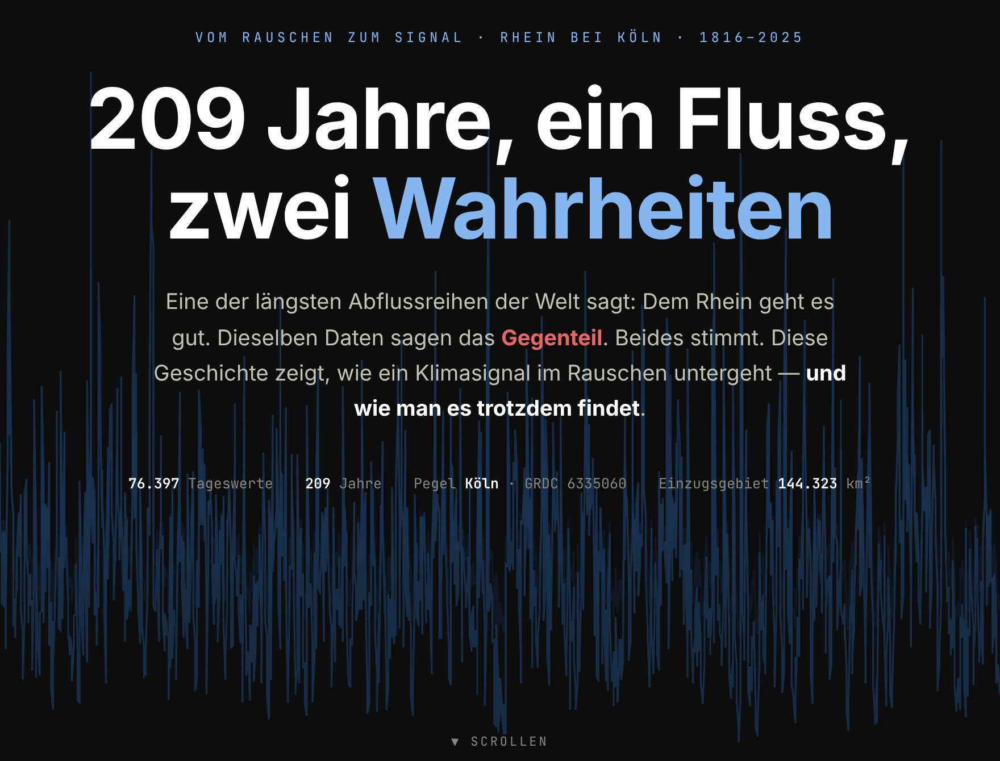
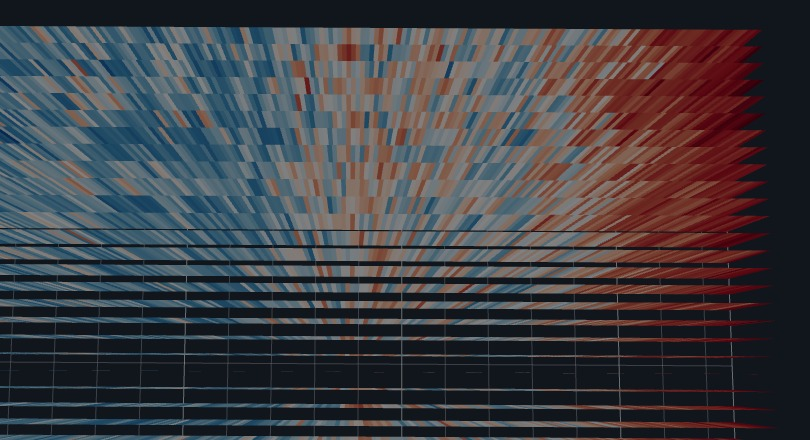
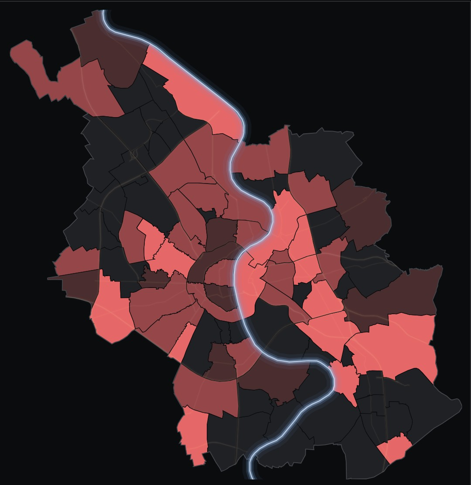
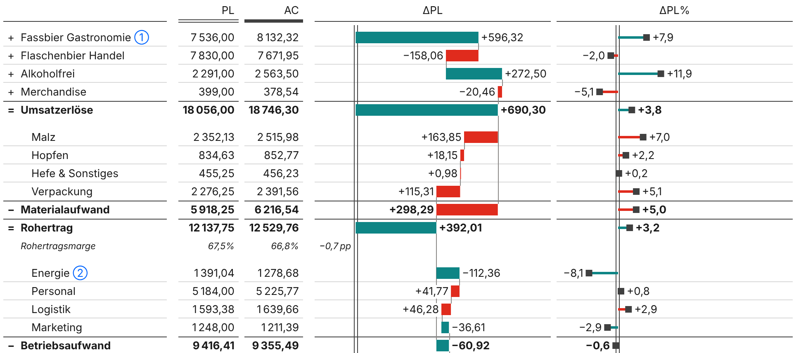
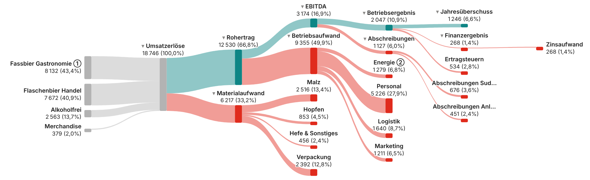

Daten-WGKnowledge Kitchen
Daten zum
Nachkochen.
Visual Stories und Power-BI-Visuals nach IBCS-Vorbild für Controlling & Finance. Kostenlos und Open Source.

ChartKitchenIntegrierte Varianz

StoryRhein · 209 Jahre

Klima175 Jahre

StoryKöln

P&L StatementGuV mit Plan-Abweichung

P&L StatementSankey · wohin das Geld fließt